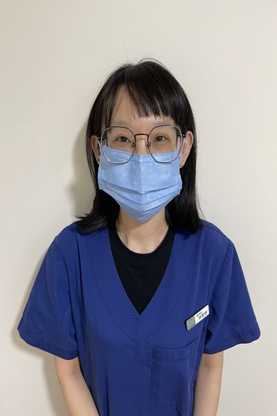
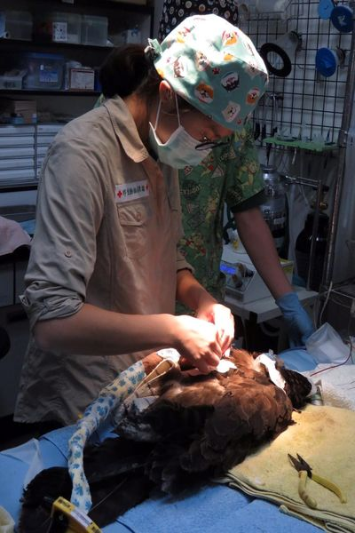

- 2016-2017 美國獸醫血液透析課程(hemodialysis academy)結業
- 美國獸醫腎臟泌尿醫學會(ASVNU)會員
- 前台大臨床動物醫學研究所暨動物醫院內科醫師
- 前台大附設動物醫院傳染病門診醫師
- 台大臨床動物醫學研究所內科碩士
- 國家獸醫師專門職業及技術人員高等考試合格台大獸醫學學士
- 前台灣大學附設動物醫院腫瘤內科門診獸醫師
- 台大臨床動物醫學研究所碩士
- 國家獸醫師專門職業及技術人員等考試合格
- 台灣大學獸醫學系學士
- 國立中興大學獸醫所碩士(腫瘤實驗室)
- 國立中興大學獸醫教學醫院 內科獸醫師
- 日本酪農學園大學獸醫院小動物科短期進修
- 寵物行銷/響片訓練課程結訓
- 寵物照護人員訓練課程講師
- 歐洲獸醫高級學院ESAVS心臟科訓練
- 心傳動物醫院主治獸醫師
- 前台大附設動物醫院傳染病門診醫師
- 臺灣大學臨床動物醫學研究碩士
- 台灣大學獸醫學士
- 前沐恩動物醫院住院獸醫師
- 前恩亞動物醫院主治獸醫師
- 台大附設動物醫院內科住院醫師
- 台大附設動物醫院內科總醫師
- 原典動物醫院內科主治醫師
- 台灣大學獸醫學系學士

- 臺灣大學臨床動物醫學研究碩士
- 前台大臨床動物醫學研究所暨動物醫院內科醫師
- 前沐恩動物醫院獸醫師
- 前極光動物醫院獸醫師
- 前台灣大學附設動物醫院小動物牙科專門門診獸醫師
- 前台灣大學附設動物醫院小動物一般外科門診獸醫師
- 前台灣大學附設動物醫院急診獸醫師
- 前台灣大學獸醫學臨床所暨動物醫院外科住院獸醫師
- 台灣小動物醫學會會員
- 國家獸醫師專門職業及技術人員高等考試合格
- 台灣大學獸醫學系學士
- 臺大生農學院附設動物醫院外科住院醫師
- 臺大生農學院附設動物醫院學士後實習獸醫師
- 台灣大學獸醫學系學士
- 台大動物醫院住院醫師
- 路加動物醫院住院醫師
- 台灣大學獸醫學系學士
- 嘉義大學獸醫學系畢業
- 板橋台安動物醫院獸醫師
- 中興大學獸醫研究所臨床組畢業
- 太僕動物醫院龍江分院獸醫師
- 台灣大學獸醫系學士
- 台大動物醫院學士後實習醫師
- 台灣大學臨床動物醫學研究所碩士
- 國家獸醫師專門職業及技術人員高等考試合格
- 國立屏東科技大學獸醫學系學士
- 105年公職獸醫師高等考試三級考試合格
- 國家獸醫師專門職業及技術人員高等考試合格
- 國立臺灣大學獸醫學系學士
- 屏科大保育類野生動物收容中心獸醫師
- 馬達加斯加動物醫院門診醫師
- 香港天水圍濕地公園獸醫顧問
- 香港享和珍禽異獸醫療中心門診醫師

- 國家獸醫師專門職業及技術人員高等考試合格
- 國立中興大學獸醫學系學士
- 特有生物研究保育中心野生動物急救站獸醫師
- 台灣大學獸醫學系學士
- 前恩亞動物醫院住院獸醫師
- 國家獸醫師專門職業及技術人員高等考試合格
- 台大臨床動物醫學研究所內科暨腎臟科碩士
- 國家獸醫師專門職業及技術人員高等考試合格
- 中興獸醫系學士
- 台灣大學獸醫學系學士
- 國家獸醫師專門職業及技術人員高等考試合格
- 前豐盛動物醫院獸醫師
- 台灣大學獸醫學系學士
- 國家專門職業及技術人員檢核考試及格
- 國立臺灣大學分子暨比較病理生物學研究所 碩士暨獸醫病理住院醫師
- 臺大生農學院附設動物醫院學士後實習獸醫師